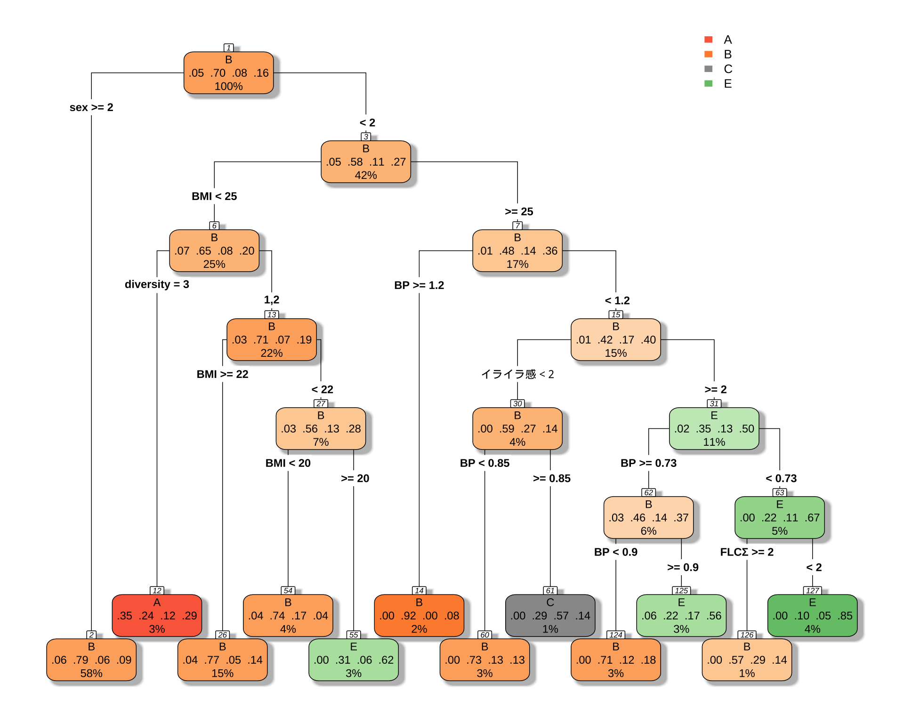
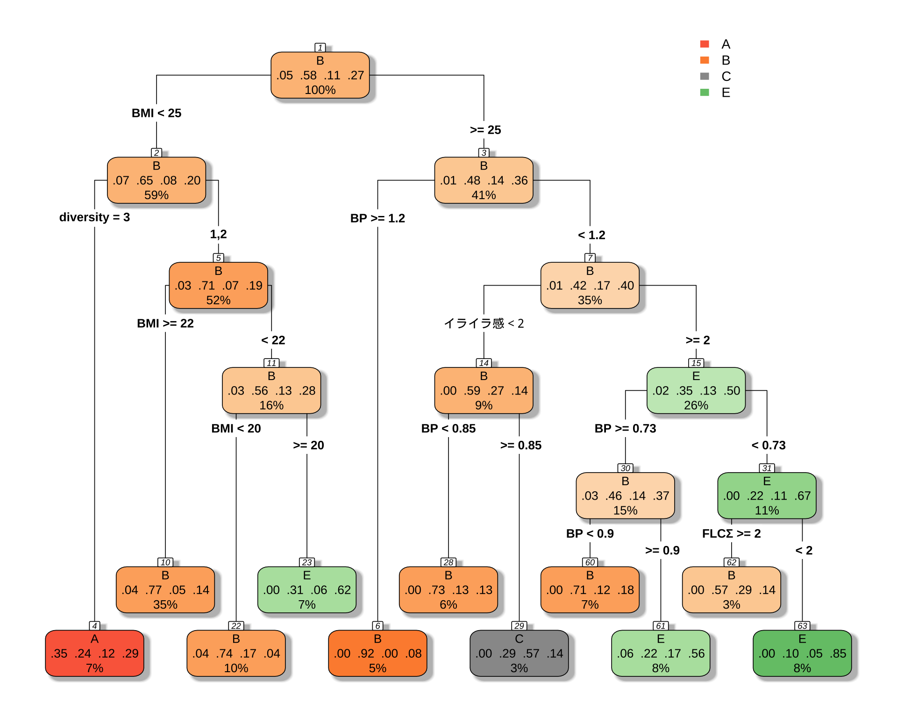
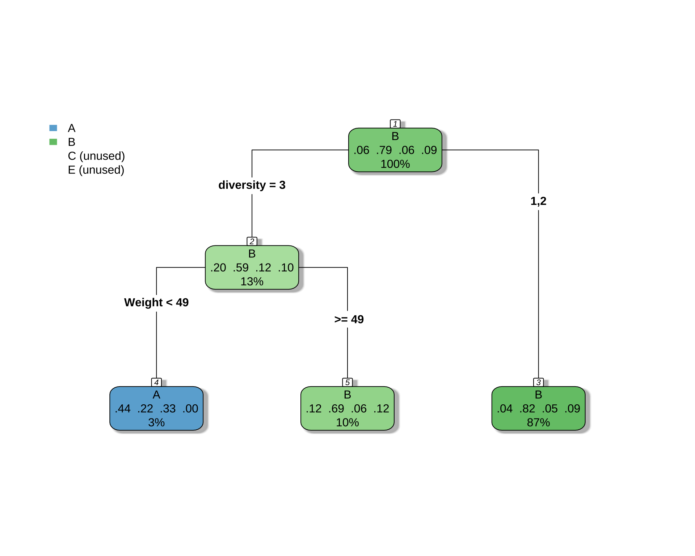
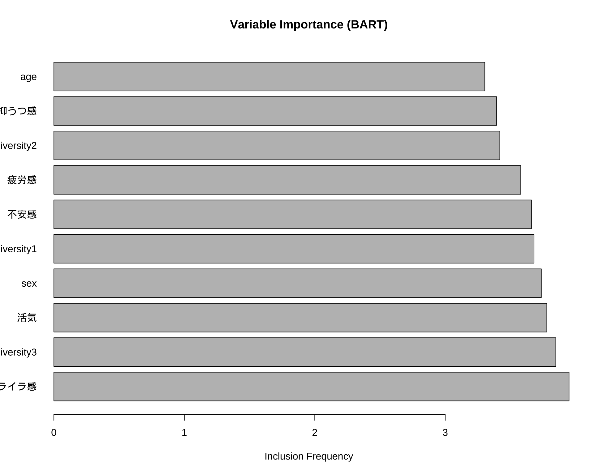

library(readxl)
library(knitr)
df <- readRDS("df.rds")
library(showtext)
showtext_auto()弘前データ５：BART によるフローラタイプ予測
備考は全て外し，LOX_Index と 判別式 も説明変数としては考慮しない．
library(dplyr)
df_filtered <- df %>%
filter(is.na(BP備考), type != "D") %>%
select(-c(BP備考, LOX_Index, 判別式, id, med_col, 年代)) %>%
droplevels()1 CART モデル
library(rpart)
library(rpart.plot)
# 目的変数が5クラスになっても、式は同じ
# rpartが自動で多クラス分類として扱ってくれる
cart_model_5class <- rpart(
type ~ ., # 目的変数を5クラスのものに変更
data = df_filtered,
method = "class" # 分類なので "class" のまま
)
printcp(cart_model_5class)
Classification tree:
rpart(formula = type ~ ., data = df_filtered, method = "class")
Variables actually used in tree construction:
[1] BMI BP diversity FLCΣ sex イライラ感
Root node error: 167/564 = 0.2961
n= 564
CP nsplit rel error xerror xstd
1 0.013473 0 1.00000 1.0000 0.064923
2 0.011976 10 0.83234 1.0299 0.065471
3 0.010000 11 0.82036 1.0299 0.065471# 決定木を可視化
rpart.plot(
cart_model_5class,
type = 4,
extra = 104, # 各ノードのクラス別サンプル数を表示
box.palette = "auto", # 色を自動で設定
shadow.col = "gray",
nn = TRUE
)
初っ端から「女性ならばほとんど Type B だ」と決めつけているのが面白い．
2 男女で違う CART モデルを推定する
男性の場合正答率が６割しか出ないが，女性の場合は８割出る．これは女性の方に C, E type がないためである．
2.1 男性の場合
「 BMI が小さくて多様性が３ならば A タイプ」というルールは変わらないようである．
library(rpart)
library(rpart.plot)
df_male <- df_filtered %>%
filter(sex == 1)
# 目的変数が5クラスになっても、式は同じ
# rpartが自動で多クラス分類として扱ってくれる
cart_model_5class <- rpart(
type ~ ., # 目的変数を5クラスのものに変更
data = df_male,
method = "class" # 分類なので "class" のまま
)
printcp(cart_model_5class)
Classification tree:
rpart(formula = type ~ ., data = df_male, method = "class")
Variables actually used in tree construction:
[1] BMI BP diversity FLCΣ イライラ感
Root node error: 99/237 = 0.41772
n= 237
CP nsplit rel error xerror xstd
1 0.030303 0 1.00000 1.0000 0.076692
2 0.023569 6 0.78788 1.1111 0.077551
3 0.020202 9 0.71717 1.1111 0.077551
4 0.010000 10 0.69697 1.1010 0.077501# 決定木を可視化
rpart.plot(
cart_model_5class,
type = 4,
extra = 104, # 各ノードのクラス別サンプル数を表示
box.palette = "auto", # 色を自動で設定
shadow.col = "gray",
nn = TRUE
)
# 予測値を取得
predictions <- predict(cart_model_5class, newdata = df_male, type = "class")
# 混同行列を作成
confusion_matrix <- table(Actual = df_male$type, Predicted = predictions)
print(confusion_matrix) Predicted
Actual A B C E
A 6 4 0 1
B 4 121 2 11
C 2 14 4 5
E 5 20 1 37# 正答率を計算
accuracy <- sum(predictions == df_male$type, na.rm = TRUE) / sum(!is.na(df_male$type))
cat("正答率:", round(accuracy * 100, 2), "%\n")正答率: 70.89 %58% の正解率が 68% になる．
2.2 女性の場合
library(rpart)
library(rpart.plot)
df_female <- df_filtered %>%
filter(sex == 2)
# 目的変数が5クラスになっても、式は同じ
# rpartが自動で多クラス分類として扱ってくれる
cart_model_5class <- rpart(
type ~ ., # 目的変数を5クラスのものに変更
data = df_female,
method = "class" # 分類なので "class" のまま
)
printcp(cart_model_5class)
Classification tree:
rpart(formula = type ~ ., data = df_female, method = "class")
Variables actually used in tree construction:
[1] diversity Weight
Root node error: 68/327 = 0.20795
n= 327
CP nsplit rel error xerror xstd
1 0.014706 0 1.00000 1.0000 0.10792
2 0.010000 2 0.97059 1.0882 0.11127# 決定木を可視化
rpart.plot(
cart_model_5class,
type = 4,
extra = 104, # 各ノードのクラス別サンプル数を表示
box.palette = "auto", # 色を自動で設定
shadow.col = "gray",
nn = TRUE
)
# 予測値を取得
predictions <- predict(cart_model_5class, newdata = df_female, type = "class")
# 混同行列を作成
confusion_matrix <- table(Actual = df_female$type, Predicted = predictions)
print(confusion_matrix) Predicted
Actual A B C E
A 4 16 0 0
B 2 257 0 0
C 3 15 0 0
E 0 30 0 0# 正答率を計算
accuracy <- sum(predictions == df_female$type, na.rm = TRUE) / sum(!is.na(df_female$type))
cat("正答率:", round(accuracy * 100, 2), "%\n")正答率: 79.82 %これは正答の個数が，タイプ B 259 人から，261 人になっただけ．
3 BART による変数選択
3.1 推定
library(BART)
# 説明変数と被説明変数を準備
x_vars <- df_filtered[, !(names(df_filtered) %in% c("type"))]
y_var <- df_filtered$type
# 欠損値を含む行を削除
complete_cases <- complete.cases(x_vars, y_var)
x_vars_clean <- x_vars[complete_cases, ]
y_var_clean <- y_var[complete_cases]
# x を必ず base::data.frame に
x_train <- as.data.frame(x_vars_clean) # tibble/data.table/sparse -> NG なので明示変換
# y は 1..K の整数
y <- droplevels(y_var_clean)
K <- nlevels(y) # K = 4fit <- BART::mbart(
x.train = x_train,
y.train = y_int,
x.test = x_train, # 例として同データで
type = "lbart", # or "pbart"
power = 3.0
)fit <- readRDS("bart_fit_5class.rds")
# 予測と混同行列
p <- matrix(fit$prob.test.mean, ncol = K, byrow = TRUE)
pred <- factor(levels(y)[max.col(p)], levels = levels(y))
table(truth = y, pred = pred) pred
truth A B C E
A 4 22 0 1
B 0 373 0 6
C 1 37 2 3
E 0 71 0 20sum(y == pred) / length(y)[1] 0.73888893.2 変数重要度の出力
# 変数重要度を計算・描画
# fit$varcount に各変数が使用された回数の情報が入っている
var_counts_list <- fit$varcount # リスト形式
var_counts_combined <- (var_counts_list[[1]] + var_counts_list[[2]] + var_counts_list[[3]]) / 3 # 2カテゴリの平均
var_counts <- colMeans(var_counts_combined) # MCMCの全ステップで平均
var_counts_sorted <- sort(var_counts, decreasing = TRUE)
# 上位15件などをプロット
barplot(head(var_counts_sorted, 10),
horiz = TRUE,
las = 1, # y軸ラベルを水平に
main = "Variable Importance (BART)",
xlab = "Inclusion Frequency")
3.3 タイプごとの重要度
# カテゴリごとの変数重要度
var_counts_cat1 <- colMeans(var_counts_list[[1]]) # A vs その他
var_counts_cat2 <- colMeans(var_counts_list[[2]]) # B vs その他
var_counts_cat3 <- colMeans(var_counts_list[[3]]) # C vs その他
# 比較
comparison_df <- data.frame(
Variable = names(var_counts_cat1),
A = var_counts_cat1,
B = var_counts_cat2,
C = var_counts_cat3,
Overall = var_counts
)
# 上位10件を表示
head(comparison_df[order(comparison_df$Overall, decreasing = TRUE), ], 10) Variable A B C Overall
イライラ感 イライラ感 4.012 2.985 4.851 3.949333
diversity3 diversity3 4.586 3.370 3.588 3.848000
活気 活気 3.237 4.056 4.044 3.779000
sex sex 3.229 4.219 3.762 3.736667
diversity1 diversity1 3.904 3.387 3.751 3.680667
不安感 不安感 4.561 3.439 2.983 3.661000
疲労感 疲労感 4.623 3.224 2.891 3.579333
diversity2 diversity2 2.964 3.448 3.844 3.418667
抑うつ感 抑うつ感 3.310 3.819 3.053 3.394000
age age 3.331 3.622 2.958 3.303667